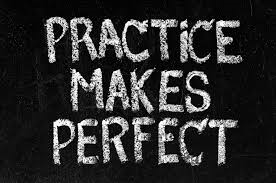

How to Pass IELTS?
How to pass IELTS - 7 Tips You Must Know!
1. Stop being a perfectionist
2. Do not spend too much time on one question
3. Use the flexibility in the IELTS tests to go back & forth through questions
4. Take your IELTS preparation seriously
5. Meditate two days before the test
6. Think positively on test day and exude confidence
7. Be constantly reading, actively listening & speaking in English

All you need is ample preparation and these 7 key essential tips to get you into high gear for the IELTS test!
Speaking part!
Tips for IELTS Speaking (tap on "Speaking")
IELTS Speaking Test. Part 1.
Click the button to get a random question:
Expand Answers: Provide detailed responses by giving reasons and examples. This showcases your language proficiency and helps you stand out.
IELTS Speaking Test. Part 2.
Click the button to get a Part 2 cue card:
Manage Time: effectively use the one-minute preparation time to organize your thoughts. This ensures a well-structured and coherent two-minute response.
IELTS Speaking Test. Part 3.
Click the button to get Part 3 questions:
Critical Thinking: practice critical thinking to articulate well-reasoned opinions on a variety of topics. Engage in thoughtful discussions to demonstrate depth of thought.
Remember, each part contributes to your overall speaking score, so consistent preparation across all sections is crucial.
IELTS Writing Task 1
You should spend about 20 minutes on this task. Summarise the information by selecting and reporting the main features and make comparisons where relevant. Write at least 150 words.
IELTS Writing Task
IELTS Writing Task 2
Welcome to the IELTS Writing Task 2 Prompt Generator. You must write 250 words or more.
Clearly express your ideas, support them with relevant examples, and pay attention to grammar and vocabulary to enhance the overall quality of your written response.
Develop a well-structured essay by introducing your main ideas in the introduction, providing detailed supporting points in the body paragraphs, and summarizing your key points in a strong conclusion, showcasing a range of vocabulary and grammatical structures for a higher score.
Listening Test
IELTS Listening Test
Test takers often make more mistakes in the IELTS Listening test because recordings are only played once. The thought of not being able to re-listen to a recording might seem nerve-racking, but if you put these tips into action, you’ll be in a much better place to ace your test.